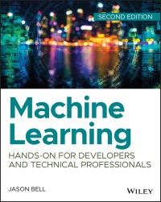

Unit 1 learnings
Unit 1 presented a start to the course on Understanding Artificial Intelligence. The major topics presented:
- The importance and the role of Artificial Intelligence in the society.
- The origins and views about AI in relation human intelligence.
- The Ethical and safety issues in AI.
- The professionalism required to function as an AI professional.
Collaborative learning discussion 1 also kicked off with interesting discussion topics related to uses of artificial intelligence in various fields. In these discussions the following topics were put forth for discussion:
- Amireh NI(2022), AI in Hospitality and Tourism Sector
- Ndlazi T(2022), AI in the Telecommunications Sector
- Dada M(2022), AI and It's Application in Self-Flying and Decision Enabled Drones
- Dewaji I(2022), How AI Can Increase the Productivity Without Being A Threat
- Kanakavelu N(2022), Safety standards for health apps with AI technology
- Lukashevich V(2022), Emotion Recognition AI in a contact center – an amazing problem-solving tool or a first step to the “Black Mirror”?
- Biswas S(2022), Rapid evolution in AI – requires processed data for Assistive Technologies (AT)
- Ganapavarapu L(2022), Usage And Ethical Conflicts Corresponding To The Usage Of Artificial Intelligence (AI)
- Moodley K(2022), Increased use of artificial intelligence, and practical uses
In our discussions, as seen above, a range of indusrty uses for AI were discussed. Hot topics for our discussion centered around increases of productivity utilizing AI, threats of AI such as potential job losses.
My initial post:
Hi colleagues, this discussion will consider the increased uptake of artificial intelligence, and a few practical uses.
Although developments in the field of artificial intelligence are fairly recent, with the first recognized work on artificial intelligence done by Warren McCulloch and Walter Pitts in 1943 (Russel & Norvig, 2022), there is currently an explosive uptake of artificial intelligence agents and data science methodologies which can be attributed to enormous innovation in quantitative methods (Sanders, 2019), and storage/software capabilities.
The use of artificial intelligence enables enhanced insights in many industries. MD Anderson, for example, are investing in cognitive technology (next generation artificial intelligence) to enhance cancer diagnosis and treatment (Davenport & Ronanki, 2018). Early detection of many diseases is one of the many potential uses artificial intelligence can possibly bring to mankind.
As with technology such as artificial intelligence, there is naturally a fear the technology will displace many jobs. While this may for some jobs be true (Davenport & Ronanki, 2018), state that artificial intelligence agents focus on high speed data processing and automation that are already beyond human capability, and thus not generally a threat to human jobs.
What are your thoughts on the above subject?
References:
Davenport, D. H. & Ronanki, R., 2018. Artificial intelligence for the real world. Harvard business review, pp. 4-10.
Russel, S. & Norvig, P., 2022. Artificial intelligence A modern approach. Fourth Edition ed. United Kingdom: Pearson Education Limited.
Sanders, N., 2019. Prediction and inference for data science in industry. Harvard data science review, Issue 1.1, pp. 2-28.
We were also introduced to our e-book, Machine Learning: Hands-On for Developers and Technical Professionals by Jason Bell which has proved to be excellent text for the introduction of AI systems.
(Bell, 2020) in his introduction to Machine learning introduces students to the concepts of supervised learning in comparison to unsupervised learning by linking the methods to use cases.
My E-Portfolio
Finally, in unit 1, students were tasked to setup their e-porfolio's. This has been a fun task and I have strived to ensure that the content of my e-portfolio is beneficial in documenting my studies